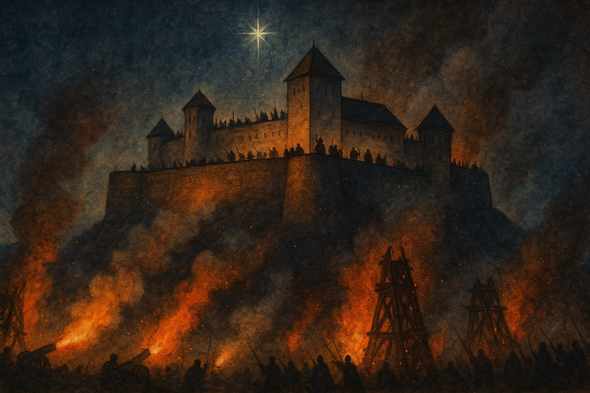
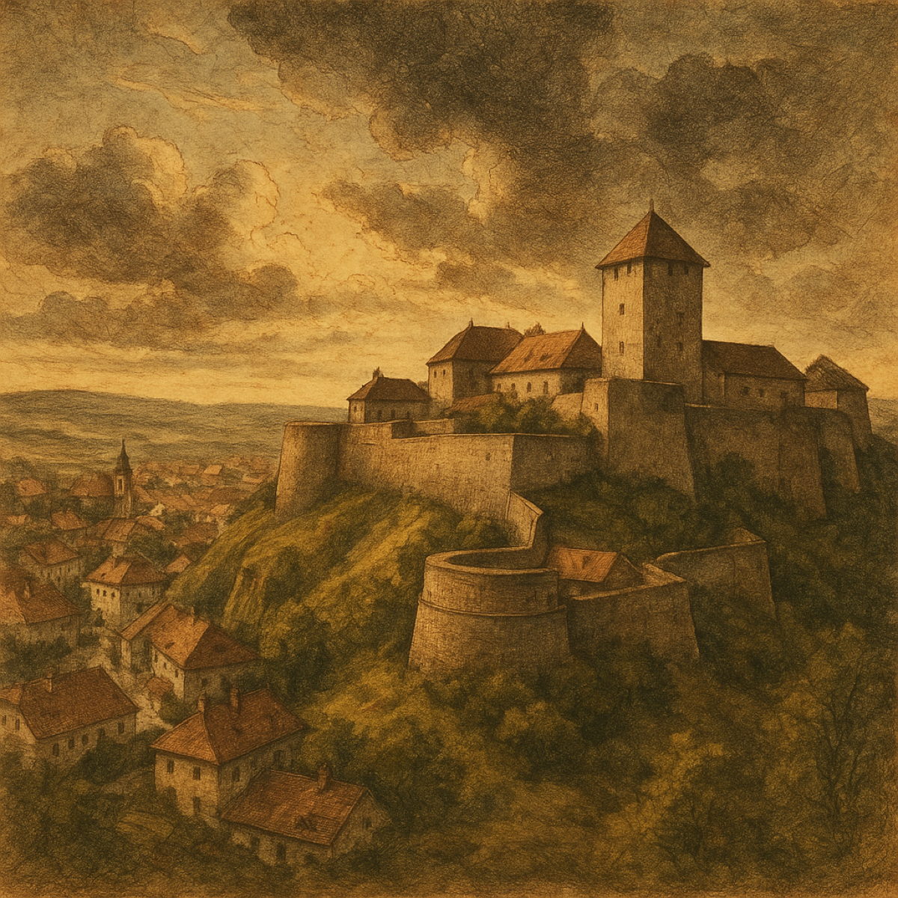

Bornemissza Gergely
A főhős · katona és feltaláló
Gyermekként rabságba kerül, felnőttként a vár leglelkesebb védője. Nevéhez fűződik a pusztító erejű „tűzkerekes” hadigépezet ötlete.

A nemzet legkedveltebb regénye · 1901 · „A Nagy Könyv" győztese
Gárdonyi Géza
1552. Eger vára. Kétezer magyar szemben a hatalmas török sereggel — és egy fiú, aki szerelméért és hazájáért áll helyt. Több mint száz éve olvassuk ugyanazt a történetet, és még mindig égnek a csillagok.
A mű
Gárdonyi Géza 1899-ben kezdte írni, és 1901-ben jelent meg könyv alakban az a regény, amelyet szerzője maga is legjobb művének tartott. Alcíme: Bornemissza Gergely élete. Nem csupán hadi krónika — egy életregény, amelyben a gyermekkori elrablástól a felnőtt hősig kísérjük végig a főhőst.
A cselekmény 1533-ban indul, a Mecsek alján: két gyerek játszik egy patakparton, és örökre összekapcsolódik a sorsuk. Innen a történet az oszmán hódítás árnyékában ível tovább Budán, Konstantinápolyon és Szigetváron át egészen az 1552-es egri ostromig.
A regény a hősi győzelem, a szerelem és a hűség históriája — de egyszersmind a megpróbáltatás, a veszteség és a kitartás krónikája is. Ezért lett belőle nemzeti olvasmány: tankönyv, film, színház és fejből idézett mondat.

A történelem
A regény gerincét valós történelmi esemény adja: a magyar hadtörténet egyik legemlékezetesebb diadala, amelyet Európa-szerte csodáltak.
Bornemissza Gergő és Cecey Vicuska gyermekkora. Jumurdzsák török vitéz elrabolja a lovakat, és velük a gyerekeket is — innen ered a szöktetés, a török kincs és az amulett története.
Az oszmán sereg csellel elfoglalja Budát; az ország három részre szakad. Török Bálint fogságba kerül, a hódoltság korszaka véglegesen elkezdődik.
Gergely és társai — Éva, Mekcsey, Török Jancsi, Matyi — vakmerő útra indulnak, hogy kiszabadítsák a rabbá lett Török Bálintot. A szöktetés nem sikerül, de a hűség megmarad.
A török hadjárat Szolnok után Eger alá vonul. A vár élén Dobó István áll, alig kétezer védővel, szemben a hatalmas túlerővel. A város népe és a nők is a falakra állnak.
Roham roham után. Gergely robbanószereket és szekérre szerelt „tűzkereket” vet be. A hősies ellenállás, a járvány és a szembejövő tél végül megtöri a támadókat: októberben a török sereg eltakarodik a vár alól. Eger győzött.
„Kétféleképpen lehet harcolni: fegyverrel és szívvel. Az egriek mindkettővel harcoltak.”
— a regény szellemisége nyomán
Személyek
A főhős · katona és feltaláló
Gyermekként rabságba kerül, felnőttként a vár leglelkesebb védője. Nevéhez fűződik a pusztító erejű „tűzkerekes” hadigépezet ötlete.
A szerelmes és a hős
Gergely gyermekkori játszótársa és élete szerelme. Nem passzív szereplő: álruhában, bátorsággal és találékonysággal keresi és menti a férfit.
Eger várkapitánya
A jobb kezét elveszítette Szalka mellett, mégis hős. Nem a hírnévért, hanem a kötelesség és a hit nevében vezeti a védőket a végsőkig.
A rejtélyes ellenfél
Dervis, janicsár, a talizmán őrzője. Évtizedeken át kíséri Gergelyéket — a regény legsötétebb és legtragikusabb alakja.
A hűséges barát
Gergely társa a konstantinápolyi kalandban és Eger védelmében. A barátság, amelyre az egész történet támaszkodik.
A rab oroszlán
Enyingi nagyúr, aki Buda eleste után fogságba kerül. Gergely és barátai érte indulnak a Héttoronyig — a szabadság és a szenvedés jelképévé válik.
Az öt fejezet
A gyermekkori elrablásból szöktetés; az amulett és a török kincs; Gergely Szigetvárra, Török Bálint udvarába kerül.
Gábor pap merénylete a szultán ellen; Gergely fogsága és szökése; Buda csellel török kézre kerül, Török Bálintot elhurcolják.
Öten vállalják a vakmerő utat Konstantinápolyba. Olasz zenészként jutnak be a Héttoronyba — de a szöktetés nem sikerül.
Az ország nagy része elesett. Jumurdzsák elrabolja Gergely kisfiát, Jancsikát. Egerben a védők ünnepélyes esküt tesznek a vár védelmére.
Éva a vár alá csempészi a térképet és a gyűrűt. Ádáz küzdelem — férfiak és nők a falakon. A török megfutamodik, Eger felszabadul. Európa ünnepel.
A hatás
Az Egri csillagok nem maradt meg a lapokon. Film, színház, tankönyv és generációk közös emlékezete lett.
A Magyar Televízió országos szavazásán a nemzet az Egri csillagokat választotta legkedveltebb regényének.
A fekete-fehér klasszikus a magyar filmgyártás egyik legnézettebb alkotása: a mozikban 9,36 millióan látták.
A regényt több részes tévésorozat formájában is feldolgozták — azóta is gyakori családi vetítés.
Az Egri csillagok több mint 120 éve folyamatosan kapható: díszkiadások, diákszövegek, hangoskönyvek és új fordítások sora.
„Egri csillagok, fényes csillagok,
— a regényből ismert sor nyomán
Hej, de sokat ragyogtok!”
Olvasd el te is
Több mint száz éve tartja lázban az olvasókat. Ha még nem olvastad, most van itt az idő; ha igen, újra a tiéd lehet. A Líra webshopjában számos kiadás közül választhatsz — a klasszikustól az ajándékba adható diszkötésig.
Megveszem a Lírán →A vásárlás a Líra webshopjában történik. Ha más kiadást vagy hangoskönyvet keresel, keress a lira.hu-n — ott mindet megtalálod.